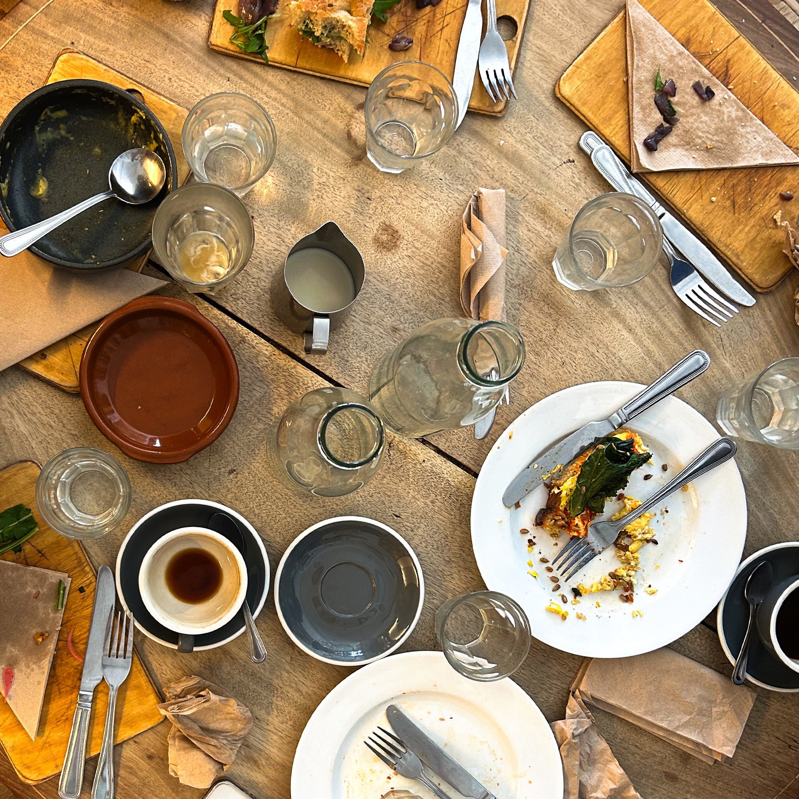
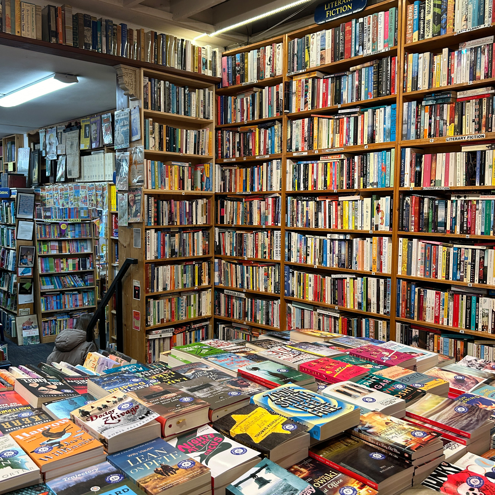

On Tuesday, we traveled around the city on a bus tour. This was extremely informative although quite bloody. It was quite interesting to hear about the long history of the state, as it is a stark difference of the few hundred years of the colonized US. We visited many different areas like the National History Museum, Dublin Castle, and Phoenix Park. Each place had its own unique history and culture, and it is clear to see how important these places are to Irish culture. We learned about the resilience of the Irish population and the great diaspora of the Irish people due to fleeing from the country.
Arriving back to the apartment after the tour, I was pretty beat. I ended up going to the local grocery store to grab a few things for dinner, and I ended up making myself a nice meal. The kitchen is quite small, but I was able to manage. Later that night, I met up with a few classmates and we went to Darkey Kelley's. A family friend told me about the place, so I was excited to visit. They had some great live music going and everyone there was quite sweet. We stayed for some tunes and then head out for home.
Le meas, Rock
Bus Tour
Griffith Spire

Fumbally Cafe Table
National History Musuem
After Class on Wednesday I went with Anastacia and Navya to a great hardware store and lunch. We needed charging adapters as our UK ones did not work. We also went to Xian Street Food and finally got a spice bowl. Apparently it is an Irish Chinese creation, and it was quite delicious. I mean, you cannot go wrong with a bowl of spiced fried food. After lunch, I peeled off to visit a coffee shop I researched before coming, Vice Coffee. When I arrived, it was not what I was expecting! By day, it is a regular cafe, but by night it also becomes a cocktail bar. The decor was adorable, and it is a very queer place. The coffee was spectacular (I got an americano with beans roasted in the UK) and I was able to get a few emails written regarding my summer jobs.
After my adventures, I went back to StayCity to do some laundry and later got dinner with some of the class. I was planning on meeting some other classmates at St. Stephen's Green, but they were leaving just as I had arrived. We were able to make plans for dinner though. We went to John's Bar and Haberdashery to get a student meal deal, and the burgers were absolutely delicious! There was a great atmosphere and we all had a blast. We all then went out to Jackie's, a funky cocktail bar. We all got to know each other a bit more, and got home early enough to have a good rest before class.
Le meas, Rock
Vice Coffee
Henry Street
Spice Bag
Jackie's
On the way to class in the morning, I walked alone and listened to Sound and Color by Alabama Shakes. I have been trying to find the best albums that give the right “vibe” for being in Dublin, and that one was quite great. It is upbeat matching the nice day funky enough to match the culture. I am really enjoying class, and am excited to keep building this site, as I am rather proud of how it has been turning out. We all walked back to the apartment and I stopped by the Fumbally for a piece of Focaccia bread to make a sandwich at home. We all took some time to ourselves and got ready for our guest lecture.
The guest lecture was extremely interesting! We learned about Gamification and its implementation into technology. It made me interested in the idea of working within gaming, as UX is such a powerful tool that can be used anywhere. After the lecture, most of the class went off to explore. We searched for a dinner spot, and ended up going to a place called The Ramen Bar. It was extremely tasty, and we had the whole basement to ourselves! That night, I spent some time with Navya and my roomie Annabel. We went to Street 66, which was so bright and welcoming. Definitely a place to visit again before we leave.
Le meas, Rock
St.Patrick's Park
Plant Store
Street 66
Navya at Street 66
After class on Friday, We all walked home together had a few hours to do our own thing. I made some lunch and got work done, and after we all traveled to the EPIC museum. It was quite an interesting place, and there was a lot of great information. What was most interesting to me was the section on music and dance, where we learned lots about how many of the most famous current artists are of Irish decent. There were a lot of interactive exhibits, which made the experience all the more fun.
Afterwards, Navya and I went to get a treat and coffee. It was a gorgeous day so we went to Vice Coffee again where we had delicious treats and great coffee for a midday pick me up. We then went to St. Patrick's Park. We got some work done while basking in the sun. Later that night we explored the Temple Bar Area and Drury St. We all had a great time hanging out and soon head back for a good night's rest before our big day trip tomorrow.
Le meas, Rock
EPIC Musuem
Vice Coffee
St. Patrick's Park
Drury St.
On Saturday, We made a great trip to Glendalough and Kilkenny. This trip was simply magical. Glendalough was simply gorgeous. Exploring the remnants of the town was quite interesting, not to mention beautiful. Each building had its own charm, and the day was fantastic to explore. There was so much history to unpack, and I loved to learn it. Perhaps my favorite part though was the hike to the upper lake. I went off the trail to climb around the mountain footpath above, and I had a great time exploring the nature on the hike. It was challenging and fun, and I felt like a little child frolicking in the forest. The views at the end were simply to die for, and all I wanted to do was to swim. But alas, we had more to see.
Kilkenny was also fantastic. The town was quite cute and there was quite a bit of shopping to do. We went to visit the Kilkenny Castle (after a bird pooped on me) and it was fabulous. The decor and scale of the place was fantastic, and there was lots of historical information to unpack as well. My favorite part was to look at the small details like the wallpaper and the intricacies of the tapestries. Overall, it was a fantastic day. We all were pretty pooped by the end and the bus was silent with sleeping students.
Le meas, Rock
Glendalough Home
Upper Lake
Kilkenny Castle Room
Kilkenny Castle Walpaper
Sunday was a free day, so a few of us decided to make the most of it. We did a Guided Tour that took us from Dublin to Belfast, Dunce Castle, and to the Giants Causeway. This tour was spectacular. First we did the Black Cab Tour which was perhaps the most informative thing I have done thus far. We learned of the politics of Northern Ireland, which are not made for the people. There are the Irish Nationalists, those who wish for a united Ireland, and the Unionists, those who support the UK rule within Ireland. These groups of people ate segregated by a wall, and the murals that exist on each side are opposites. On the Irish side, there are murals of the hunger strike, Nelson Mandela and civil rights activists, and support for Palestine. Crossing the wall, there is harsh propaganda messaging and extreme support for Israel. It was extremely difficult to see this difference, and it puts into perspective how severe this issue is. One thing that our tour guide said that really stuck with me was this: “The UK would have bombed us by now, but they can't because we share the same skin color.” These politics will be something that I continue to watch and support until there is a whole Ireland.
After the tour, we went to the Dunluce Castle. This was beautiful. It was a perfect day to visit, and the scenery was sublime. There were many places to explore and the ruins were intricate and interesting. After our tour here, we went off to the Giant's Causeway, which may be one of the coolest things I have ever seen. We took a cliff walk hike down to the shore and the views were simply spectacular. We learned all about the geological history as well as the mythological, both giving great reasoning to this unique formation. Each rock is a polygon, and it was like a set os stepping stones throughout. There were waves crashing on the shore, and little pools of water with lower sets of rocks. It is truly something I think everyone should see, and I could not recommend it more. We took a bus home and I got some good rest for the remainder of the night.
Le meas, Rock
Dunluce Castle
Dunluce Castle
Giant's Causeway
Giant's Causeway Cliff
May 13: After class we visited the National Disability Authority of Ireland (NDA) where we learned lots about how the EU has created legislation to increase web accessibility and how accessible design should not be an afterthought but bart of the design process. It was a very interesting lecture, especially learning about the differences in how the US approaches accessibility vs how the EU does. Accessibly is something I am very passionate about, and is something I will be focusing on within my future UX endeavors.
After the talk, I went to StayCity for a bit to do some dinner research. I ended up getting dinner at Full Moon. I got Pad Thai and it was quite good (although quite expensive). I went there on my own and got to spend some time reading and relaxing a bit. I do love to go out on my own at times, as being around so many people is fulfilling, but exhausting at times. Later, A few classmates and I went to The Lord Edward to get a Guinness as our tour guide said it was the best one in town. It was quite delicious, and the pour was so pretty I didn't even want to drink it. Outside of us, there were only two other women in the bar, which was a bit odd but not scary like it would have been in the US. Overall, we had a great night and went back home for some rest.
Le meas, Rock
Bright Doors of Dublin
Full Moon Pad Thai
The Lord Edward
Perfect Guinness
Today I traveled around the city on my own. I have been meaning to walk around and see all that Dublin has to offer, and it did not dissapoint. I first went to the National History Museum - Archeology. It was a cool place, but because I am not too interested in archeology, it did not captivate me as much as I wish it did. After the visit I got a delicious sandwich at Honey Truffle, which was packed with people on lunch break. I shopped around a few gift shops including a very cute plant store, and then explored the docklands. There was a surf shop that I wanted to visit out there, but when I arrived it was different than I was hoping. It is definitely a store more meant for e-commerce and lessons, as they did not have much of a retail space.
After my visits, I took the bus back to the IMMA. They had one exhibit open which was very interesting. It was about Derry Film and Video Workshop. That was the only exhibit open, so I walked a round for quite a while. Later that night a few classmates and I went to BigFan for some absolutely delicious tapas and later went to The Bar With No Name for some cocktails and a seat on the patio. It was an adorable place that was nice and hidden away. Quite overpriced, but enjoyable nonetheless.
Le Meas, Rock
The Docklands
National History Musuem tile floors
BigFan Chicken
National History Musuem
After class, I got a great veggie sandwich from the Fumbally and went home to change for our visit to Microsoft. I took the tram there nice and early just in case, so I had some extra time to sit in the warm sun. Eventually we all made it to the tour. The tour was interesting and it was nice to see what such a large corporate space looks like. I am still unsure if a place like that would suit me, but it is interesting none the less.
On our way back to StayCity, the tram lost all power and was shut down. This was right during rush hour traffic so we were all feeling a bit stressed. We got a taxi home after waiting for one for almost 30 minutes and we all got some food at John's Bar and Haberdashery. By this point, we were all hangry so we all got the student meal deal. I got the veggie burger with garlic fries which was so so good. We all took a bit of a rest and then went back to Street 66. It was game night there, so we all played some cards. This got competitive really quick, and Sam ended the game as our loser.
Le meas, Rock
Fumbally Sandwich
Microsoft
Microsoft Inside
John's Bar and Haberdashery
After class on Thursday, I got another sandwich from the Fumbally, but this time I went and sat down with Navya. I think that The Fumbally may be my favorite restaurant I have found so far, as it has really great options for me as I am (mostly) vegetarian. Not to mention, they are simply delicious. Then it was time for the walking tour with Dr. Darren Kelly. It was quite interesting to learn about how Dublin became the tech hub of Europe, and how each step in that process related to different points in Dublin's recent history.
After the walking tour, a good group of us went to explore some of the shops in that area. We really wanted to go to the Muji Store. I had never heard of this before, but got really excited about it when I learned it was a stationary store. I have been looking for a new small sketchbook and some nice pens for writing and drawing, so I got a few things while I was there. The pens write beautifully, and I was happy about the purchase. We all went home after, only to meet up again to grab food at Cafe Topiolis. I had lasagne, and it was so tasty. The sauce was especially flavorful and almost had a warming sensation to it. Later that night, we went out to see what the dancing scene was like. We went to Workmans, and had a great time hanging out on the patio. It was quite packed, and a place definitely made to meet others. We had a nice night, and then walked home in the rain.
Le meas, Rock
Cafe Topolis
The Docklands
Trinity College Sculpture
Workmans
On Friday, I explored around the city a bit before meeting up at Trinity college. I got a chance to get food and walk around, and I also got some postcards for home. I became pen pals with a few people from my art class this winter semester, and I have to get on my game sending cards back. Once we all arrived at Trinity, we broke off and went over to google. The walk was interesting and we were able to point out some of the landmarks we were shown yesterday. Once we arrived at google, we sat in the lounge where they had very fun old google logo chairs that reminded me of using the internet as a little kiddo. Then we started the tour.
The tour was interesting. It was impressive to see how large this company was with so many buildings, floors, and spaces there were, yet it was still a bit eerie. The tour was odd, I felt like we didn't learn all that much about what our guides did or what the work entailed, instead it was focused on the space itself, which of course was quite cool. Perhaps it was the way in which the content was presented or simply the competitive nature forced onto students at Umich, but I felt very discouraged about the possibility of a job there in the future. They put a huge focus on the internal referral program, and it made me again realize that these are connections that I still need to make.
After google, we walked around a bit more and went into Sweny's Pharmacy. I had no idea what to expect here. We went in to the small place and looked around. The women there greeted us and handed us Ulysses by James Joyce to read aloud. Partially through, an older man barged in with a large group of new Icelandic friends and proceeded to sing to all of us. We were corralled behind counters to fit as many people as possible, and then this man sang two songs for us. By the end we were all singing along. He chatted with us all afterwards, and then went back to the pub across the street. This was so interesting, and it reminded me of my mom. She is the most personable person that I know, and she has always loved to meet customers around the cider mill. Occasionally these conversations would end in her showing new friends around the farm. That was always really fun to see, as it reminds me how there are so many caring people in the world, and how my mom has a way of finding them.
Le meas, Rock
Google Lobby
Trinity College
Sweny's
Dublin from the roof of Google
Today, we traveled to Galway. Once we arrived, I dropped my things and started walking around town. I went to the market, which was so cute! They had lots of food and gifts, and it was packed. I got a pea and potato curry and it was simply delicious. I continued to walk around town, spotting places to visit later when we had a bit more time. Then, it was time to go to the Computer and Communications Museum of Ireland. This was way better than I expected it would be from just the photos online. We got to play on so many retro gaming systems and learned some really cool info about the growth of tech in Ireland. I loved learning about Apple, as in the early days there was a strong link to art and counterculture. After the tour, I played a bunch of games. I played some duck hunt, an X-Box racing game with Ben and Anastacia, and some classic Bejeweled. We all had such a blast.
Once we arrived back in town, we walked around a bit more before landing at a pub near McDonagh's. We sat down for a bit, got a beer and listened to some live music. After dinner, we kept exploring and went to the Nimmos Pier. We took some photos and frolicked in the grass. Then we all split up and a few of us went to a different bar on the south side of town. We had such a blast and had many laughs. We just stayed in one place for the night, which was the energy that I needed. We got back to the hostel by about midnight and got some good rest before our adventures to the Cliffs of Moher.
Le meas, Rock
Ben at Nimmos Pier
Galway
Quays Bar

Charliie Byrne's Bookshop
Today, we traveled to the Cliffs of Moher. The cliffs were so gorgeous, and it was a beautiful day to walk and see them. We walked around the right side of the cliffs, and took many pictures along the way. It was a nice warm day, and we had a rather nice hike. I wasn't feeling my best, so while some of the group went on hiking, I sat down on the hillside. This was actually my favorite part of the journey, as I was able to listen to passersby's and the sounds of the countryside.
On the way home, we stopped by Obama Plaza, a gas station themed around Barack Obama! It was a fancy place, and there were quite a lot of statues around. After a quick snack, we kept on our journey back to Dublin. Once we got home, I did my laundry and relaxed. I needed some good downtime after such a big weekend.